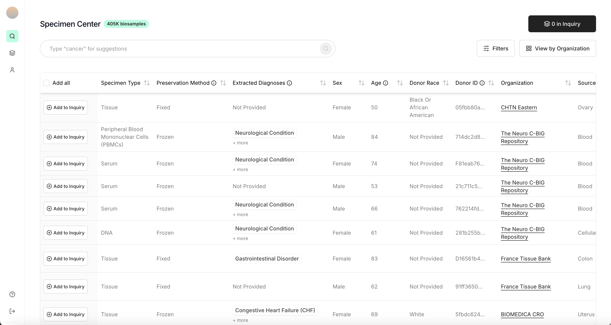
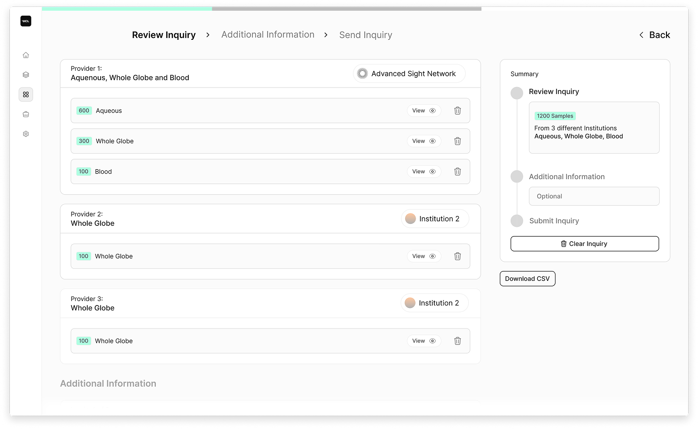
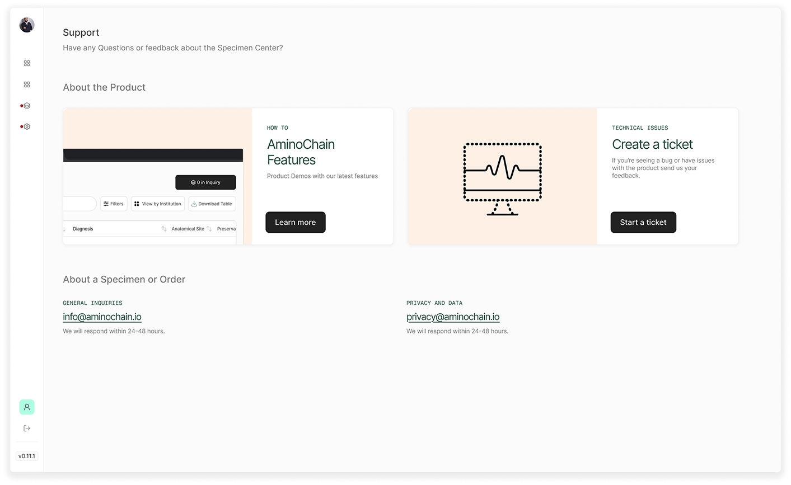
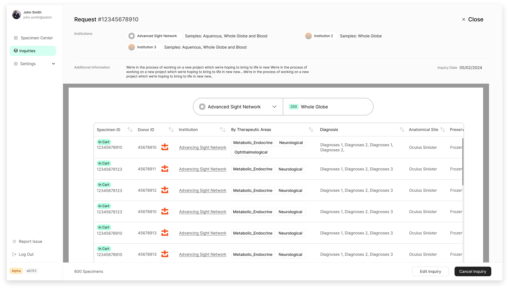
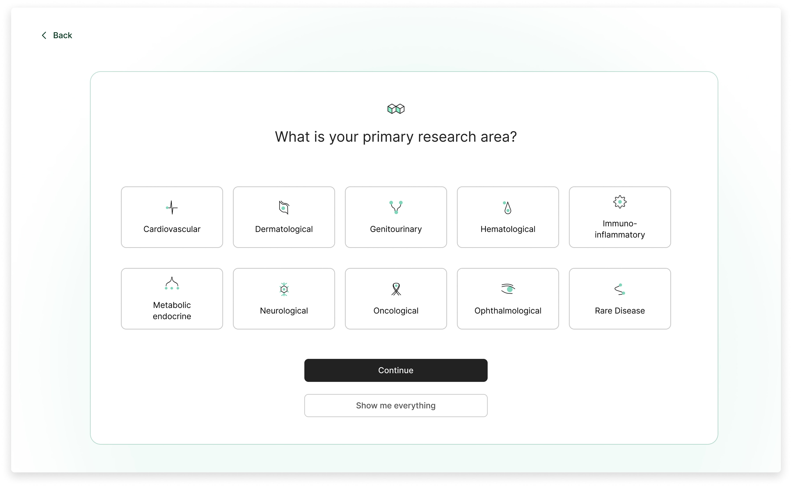
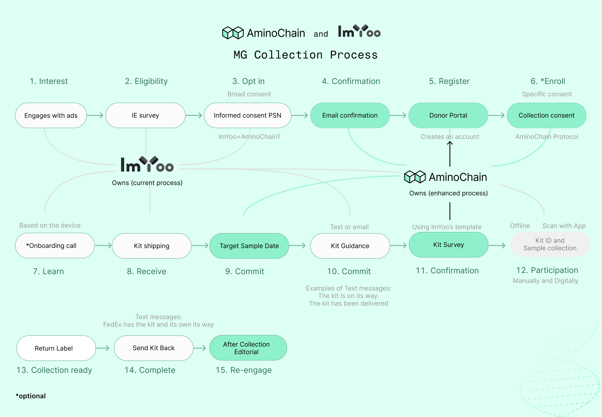
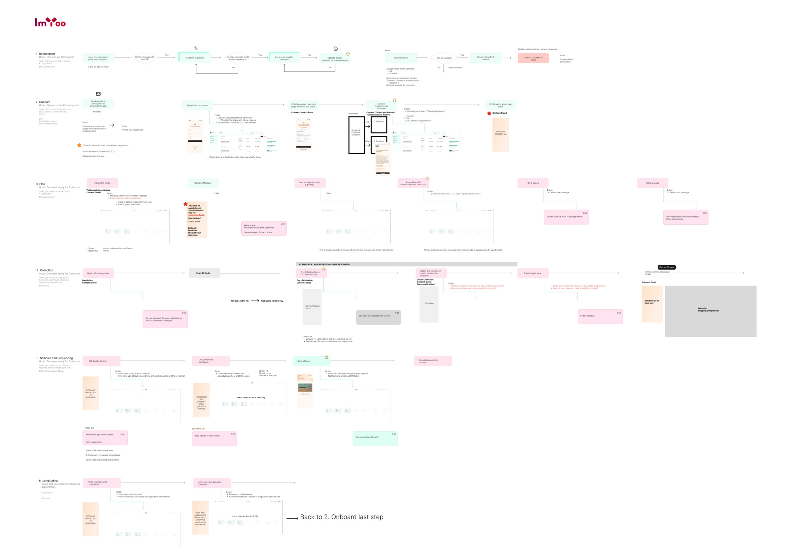
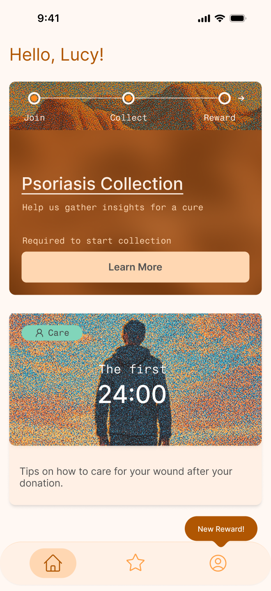
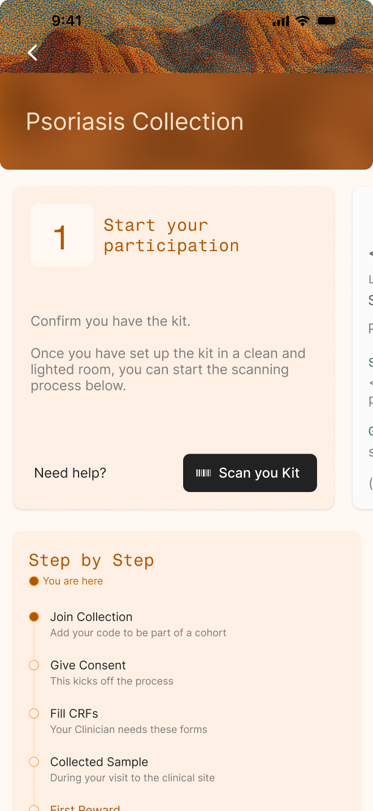
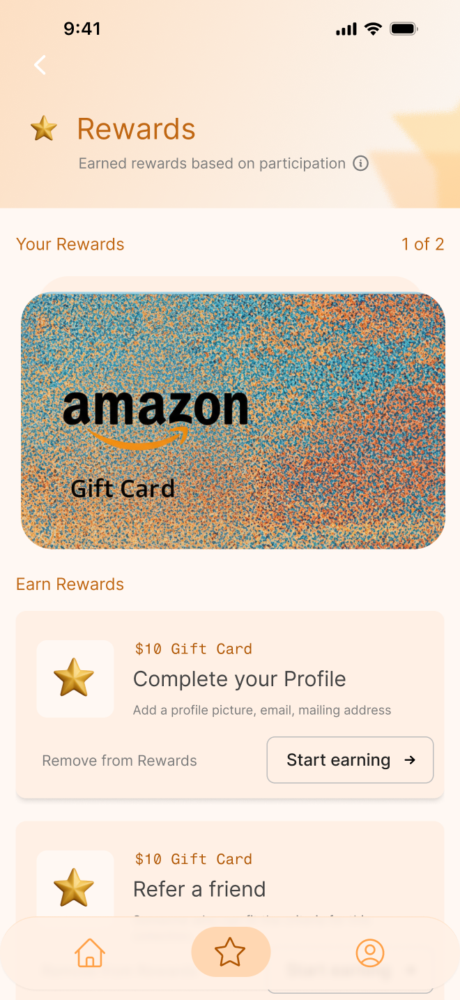

AminoChain
A marketplace for biosamples and omics data for donors, clinicians and researchers. The goal: decentralize data to make insights and licensing more equitable.
OVERVIEW
I joined as founding designer, without a product and a new product space.
No design process, no brand, just an engineering prototype and a founding team still figuring out what to build. I came in as the first designer and took ownership across the board: brand identity, product direction, design system, and the operational workflows that would eventually connect biobanks, researchers, and donors.
I ran early research sessions with potential users across both sides of the marketplace, synthesized patterns into product direction, and established the design process from scratch, including kickoffs, design reviews, and handoff workflows with engineering.


THE PROBLEM
Specimen collection lived offline in legacy tools.
Biobanks were managing donor relationships through spreadsheets and phone calls. Researchers couldn't search or filter available specimens at scale. Every new partner meant a new one-off process.
THE PLATFORM
A data-dense web experience for procurers and providers.
The web platform served two roles with different needs. Procurers, typically researchers and lab managers, needed to search, filter, and request specimens across complex biological criteria. Providers, typically biobank staff, needed to manage incoming requests, update specimen status, and track collection compliance.
I defined the data schemas for both roles and designed the information architecture that made the density navigable, establishing how biosamples were categorized, filtered, and surfaced across the platform.




DESIGN SYSTEM
One source of truth for a platform that had to feel trustworthy at volume.



As we rebranded, we started with primitives and semantic tokens. New elements got tokenized as they were created, so the system grew alongside the product.
SERVICE DESIGN
I documented each collection as a repeatable system, not a one-off.
Each specimen type, skin biopsy, genomics, mail-in swabs, had different environments, different stakeholders, and different compliance requirements. I worked directly with the clinical operations team, observed collections in person, and turned what they knew intuitively into documented workflows the product could support.
Service blueprints mapped every touchpoint from donor consent to sample handoff. These weren't deliverables for the sake of process: they became the spec. Every product screen that followed mapped to a documented workflow step.



What we knew
Service design doesn't ship. Leadership wanted product screens, and the clinical operations team moved faster than documentation could keep up with.
The Tradeoff
The blueprints became the spec. Instead of designing screens and reverse-engineering the workflow later, we documented the workflow first and the screens were faster to produce for it.
THE PIVOT
Web meets native apps for blockchain
What we knew
A web portal would have shipped faster. Native meant a second platform, new engineering scope, and a longer timeline to first collection.
The Tradeoff
The privacy constraint wasn't a tradeoff to negotiate. We built native and used the added time to design a better donor experience than the web could have delivered.
THE DONOR APP
For Donors a space for collections, profile management and a decentralized wallet
.gif)
Most donors had never participated in a research collection before. The app needed to make a complicated clinical process feel straightforward. The core journey was three steps: join a collection, complete the required steps, earn rewards.
A longitudinal timeline surfaced the right task at the right moment, from consent to sample drop-off. Rewards were integrated directly into the task flow as tangible incentives tied to completed actions. The visual direction intentionally contrasted the clinical context: warm, textured, and human.



OUTCOME
Before Series A
The platform scaled to over 500,000 biosamples across more than 50 provider partners. The design system was adopted by the external engineering agency, and the service blueprints became onboarding material for new collection partners.